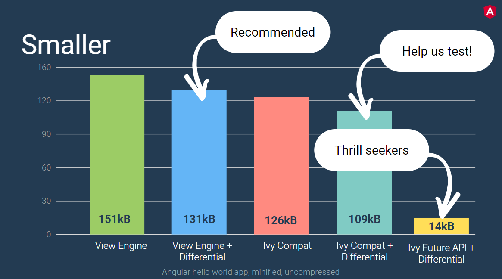

Angular 8
By Rob Pocklington
Breakdown
Typescript 3.4 + Misc. bits
Differential Loading + Ivy (opt-in)
Deprecations + Upgrade Notes
Typescript 3.4
tsconfig.json -> compilerOptions -> incremental: truefor faster type-checking
Misc. bits
Differential Loading
Ivy

Ivy (cont ...)
or
tsconfig.app.json -> angularCompilerOptions -> enableIvy: trueDeprecations / Upgrade Notes
@angular/http package is gone! (aka HttpModule)@angular/common/http instead (aka
HttpClientModule)